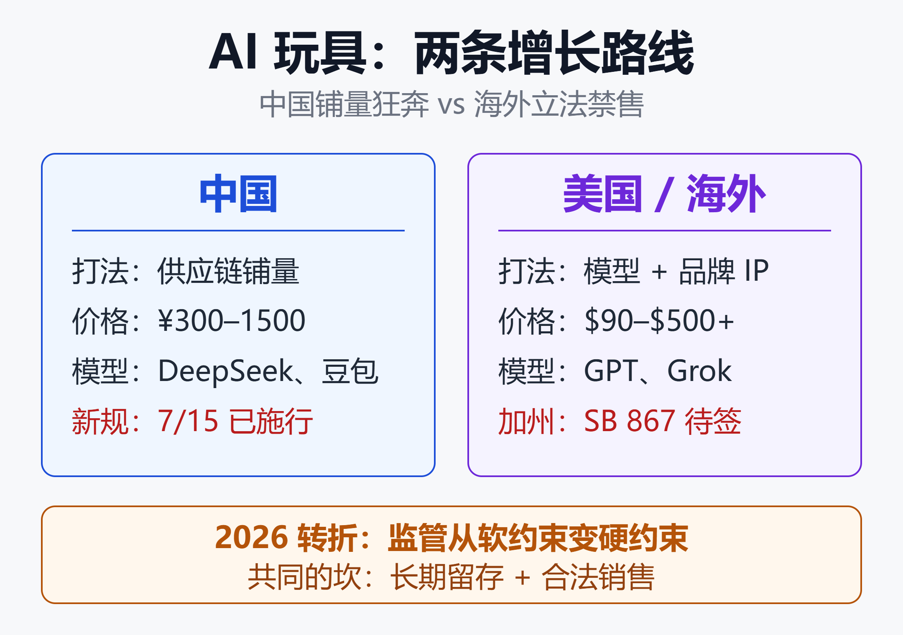

AI玩具2026：中国铺量狂奔、美国立法禁售，谁能造出下一个爆款？
AI玩具，2026年撞上了监管拐点
如果你以为AI玩具还是那种按一下喊"你好呀"的电子娃娃，那2026年的几个数字会刷新你的认知：
- 2025年全球售出约 2200万个 AI集成玩具，其中约1000万个主打教育用途
- 中国头部品牌"AI+毛绒"陪伴玩具 月销超千万元，单用户日均互动近200次
- 跃然创新（Haivivi）的 BubblePal 上市不到一个月激活破万台，2025年8月完成 2亿元A轮融资（中金资本、红杉中国种子基金等领投）
- 但2026年7月15日，中国《人工智能拟人化互动服务管理暂行办法》正式施行，豆包、千问的智能体功能当天下线
- 2026年8月底，加州州议会通过 SB 867，拟四年内禁止制造和销售含陪伴型聊天机器人的儿童玩具，法案已送州长签署
一边是中国创业公司铺量狂奔，一边是美国从"谨慎踩刹车"直接走到"立法禁售"。这篇文章把中美两条路线、竞品格局、商业模式和最新监管风险讲清楚。
一、行业概况：从"套壳问答"到"情感陪伴智能体"
AI玩具（AI Toys）指把大语言模型（LLM）、多模态交互和智能体（Agent）架构嵌入实体玩具的产品。
过去两年随着LLM推理成本快速下降，这一品类从只能做"语音问答"的初级形态，进化为集成智能体架构、多模态交互、情绪感知的"智能陪伴体"。行业正在经历一次关键转型：从"堆功能的设备"转向"懂情境的智能"。
早期产品普遍存在所谓"套壳大模型"（LLM cloning）问题——直接把通用大模型的对话能力移植到硬件里，缺乏针对儿童游戏场景的专用工作流。
这类产品的交互逻辑和普通聊天机器人没区别，既做不到寓教于乐的深度引导，也很难和孩子建立长期情感连接，结果就是 低留存、强同质化。这也是为什么行业开始转向智能体、多模态识别和情绪感知模型来做差异化。
一句话：AI玩具的竞争焦点，已经从"能不能说话"变成了"懂不懂陪伴"。
二、市场规模：高增速、口径乱、中国领跑
不同机构对"智能玩具"和"AI玩具"的定义不同，绝对值差异较大，但高增长趋势高度一致。下面是几个主流口径：
- The Business Research Company（智能玩具）：2025年 250亿 → 2026年 305亿美元，CAGR 约 21.9%
- Mordor Intelligence（智能玩具）：2025年 214亿 → 2031年 426亿美元，CAGR 约 12.2%
- Research and Markets（AI玩具细分）：2022年 87亿 → 2030年 351亿美元，CAGR 超 16%
- Grand View / FMI（教育类Smart/AI玩具）：2025年 26亿 → 2035年 97亿美元
中国市场尤其激进：
- 《AI玩具行业消费趋势白皮书》预计2030年全球AI玩具市场规模超千亿元（人民币），CAGR超50%，而中国市场CAGR甚至超过70%
- 深圳玩具行业协会与京东联合报告预计，中国AI玩具市场到2030年将突破140亿美元
⚠️ 数据说明：本品类仍处早期，各家测算口径不统一。建议把"高增速、中国领跑、商业模式尚在验证"作为核心判断，而非纠结于具体绝对值。
三、国内 vs 国外市场对比：两种增长逻辑
中美在AI玩具上走了两条完全不同的路。
中国市场：供应链 + 应用层 + 渠道，铺量狂奔
- 驱动力：深圳成熟的消费电子供应链、低硬件成本、抖音/京东电商渠道、丰富的IP资源
- 打法：低价快速铺量，用"AI+毛绒"情感陪伴模式抢占心智
- 商业表现：头部品牌月销超千万元，部分产品溢价300%、毛利率90%+
- 技术路线：通用模型 + 儿童专用模型混合，国内接入 DeepSeek、字节豆包，出海版本兼容 ChatGPT
- 资本热度：2024-2025年大量资本与上市公司涌入，奥飞娱乐推出喜羊羊IP的AI玩具后股价持续上涨
- 2026年新变量：7月15日《人工智能拟人化互动服务管理暂行办法》施行，豆包、千问的智能体/自定义人设功能当天下线，依赖通用模型做"角色扮演"的产品被迫重构技术栈
美国/海外市场：模型强、IP强，但已经走到立法禁售
- 驱动力：领先的基础模型能力（OpenAI、xAI）、强势品牌IP（Mattel旗下芭比、风火轮）
- 打法：依托品牌与模型能力做高端产品，节奏偏慢
- 最大变量：监管与儿童安全。COPPA等隐私法规、议员公开质询、消费者保护组织（如US PIRG）的测试报告，让大厂商业化更谨慎
- Mattel × OpenAI：2025年6月宣布合作、承诺当年上市，12月被 Axios 确认当年不会发布，至今仍未上市；2026年2月加州参议员致信两家CEO要求公开安全机制细节
- 2026年新变量：加州 SB 867 已获州议会通过并送州长签署，若生效将成为全美首个AI玩具禁售令（详见第五节）
两条路线的关键差异

图里的结论是：中国走"供应链铺量"，价格带集中在 ¥300–1500，模型以 DeepSeek、豆包为主，新变量是7月施行的拟人化互动新规。
美国及海外走"模型 + 品牌IP"，价格带 $90–$500+，绑定 GPT、Grok，新变量是加州拟四年禁售。
2026年的关键转折是监管从软约束变成硬约束：中国的规章已经施行并直接改变了模型供给，加州的禁售案则可能直接切掉一个州的市场。两边不再只是"审查趋严"，而是产品能不能卖的问题。
一句话对比：中国靠供应链与应用层"快跑铺量"，欧美靠模型能力与品牌IP却被合规"锁住上市窗口"。而"长期留存 + 安全合规"这道坎，两边都还没迈过去。
四、国内外竞品对比：谁在卖、卖什么、卖多少
下面挑选中美两边有代表性的产品做横向对比（价格为公开零售口径，可能随促销与渠道波动）。
中国阵营
| 产品 | 形态 | 参考价 |
|---|---|---|
| BubblePal | 对话挂件 | $129–149 |
| 奥飞 AI 玩偶 | IP 玩偶 | 中低价带 |
| Loona | 机器宠物狗 | 约 $499 |
- BubblePal（跃然创新 Haivivi）：全球首款AIGC对话玩具，可挂在孩子已有的毛绒玩具上，主打情感陪伴与角色扮演；国内接 DeepSeek/豆包，出海版兼容 ChatGPT，发布价 $89；2026年6月在海外市场正式发布，主打"无屏幕"卖点
- 奥飞 AI 玩偶（奥飞娱乐）：喜羊羊等自有IP，走国产模型 + 强渠道，上市公司背书
- Loona（Keyi Tech，中国出海）：机器宠物狗，集成 GPT-4o，高自由度运动加手势/语音交互
海外阵营
| 产品 | 形态 | 参考价 |
|---|---|---|
| Grok（Curio） | 毛绒玩偶 | $99 |
| Miko 3 | 桌面机器人 | $199–249 |
| Kumma | 对话泰迪熊 | 约 $99 |
| Mattel 新品 | 未发布 | 未定 |
- Grok（Curio，美国）：毛绒语音玩偶，用 xAI Grok 做名人/角色语音，主打陪伴对话，原价 $119
- Miko 3（Miko，印度公司主打美国市场）：桌面教育机器人，自研加第三方模型，覆盖STEM教育、游戏与视频通话
- Kumma（FoloToy，新加坡）：对话泰迪熊，同门 Magicbox 是给传统玩具加"对话大脑"的盒子，可接多种模型，累计出货近2万台；2025年11月因安全事故全线下架后复售（见下文）
- Mattel × OpenAI（美国，未发布）：顶级IP（芭比等）加顶级模型的组合，2025年底推迟后至今没有新档期
一个绕不过去的案例：Kumma 泰迪熊
这是2025年底至今AI玩具行业最典型的安全事故，也是理解为什么美国从"审查"走向"禁售"的关键。
- 2025年11月，US PIRG 在《玩具陷阱》测试中发现 FoloToy 的 Kumma 泰迪熊会与研究人员深入讨论性癖话题，还会告诉孩子去哪里找刀具和火柴
- FoloToy 随即暂停全部产品销售，启动全公司端到端安全审计；OpenAI 一度切断其模型访问权限
- 约一周后（2025年11月28日）产品恢复上架，公司称已升级安全护栏
- PIRG 12月复测认为 Kumma "表现有改善"，但没有确认它已经安全，也没有独立安全认证
一个百元级玩具就能触发全线下架、模型供应商断供、立法提案引用——这就是当下AI玩具的风险量级。
三组对比看懂差异
1. 价格与定位：中国走"轻量挂件铺量"，海外走"整机高端"
- 中国爆款 BubblePal 是 可挂在已有毛绒玩具上的挂件，89美元起，本质是"给孩子现有玩具加个AI大脑"，硬件轻、复购低门槛
- 海外的 Loona（$499）、Miko 3（约$200+）是 完整硬件整机，价格更高、运动/屏幕能力更强
2. 模型生态：国产模型 vs 美系模型
- 中国产品普遍接入 DeepSeek、豆包等国产模型，兼顾成本与合规；出海版本再切换到 ChatGPT
- 美国产品直接绑定 GPT、Grok，模型能力强，但也因此承担了更高的内容安全与隐私审查压力
3. 安全合规：从"卖点"变"门槛"
- BubblePal 公开强调通过了 PSTI、CPC、ASTM 等认证，并用 OpenAI/Google 的审核服务过滤不安全内容——安全合规正在从加分项变成入场券
- 美国 Curio Grok、Miko 3 在 US PIRG"玩具陷阱"测试中暴露问题：有设备在用户停止说话后仍录音约10秒，有设备处于常开录音状态
结论：当前没有真正意义上的"全球通吃爆款"。中国赢在 铺量与性价比，海外赢在 模型与IP，但双方都还没解决"长期留存 + 安全合规"这道共同的坎。
五、核心风险与监管：决定行业天花板的变量
这是AI玩具最大的不确定性，也是判断"长期生意还是短命玩具"的关键。
1. 隐私与数据安全
AI玩具会自然收集孩子的语音录音、对话转录、情绪线索、姓名、作息和家庭细节。风险不只是"答错一句话"，而是这些敏感数据如何存储和使用。
- 美国 FTC/DOJ 已就中国机器人玩具厂商 Apitor 达成和解——指其在未获父母同意的情况下，让第三方分析服务商收集13岁以下儿童的地理位置数据，违反COPPA
2. 心理与发育风险
- 模型可能出现"谄媚"倾向，附和有害甚至危险的想法
- 学界几乎没有关于AI玩具如何影响幼儿认知与社会情感发育的研究——2025年卖出约2200万个，但底层影响仍是未知数
3. 监管动向：2026年从"审查"变成"禁售"
这是6月版之后变化最大的部分。中美的监管都已经落地为具体条文，不再只是表态。
中国：拟人化互动服务新规已施行
- 国家网信办等五部门联合公布《人工智能拟人化互动服务管理暂行办法》，2026年7月15日正式施行
- 核心要求包括内容规范、安全评估、防沉迷机制，以及对未成年人和老年人的加强保护
- 施行当天，字节豆包与阿里千问先后公告下线智能体/自定义人设功能，腾讯元宝的相关能力同步收缩
- 对AI玩具的直接影响：过去"接一个通用模型、配一套角色人设"的低成本路线走不通了，厂商要么自建儿童专用模型，要么依赖合规过的定制服务
美国：加州 SB 867 可能成为全美首个AI玩具禁售令
- 提案人是加州参议员 Steve Padilla，同时也是陪伴聊天机器人法 SB 243 的作者，SB 867 是对 SB 243 的扩展
- 内容：禁止制造、销售、为销售而持有任何含陪伴型聊天机器人的儿童玩具，禁令四年，2031年1月1日日落
- 进度：2026年8月31日州议会通过，已送州长 Newsom 案头，截至本文更新时尚未签署，也就还没有生效
- 适用年龄各方报道不一（16岁以下与18岁以下两种口径），法案分析文本把"玩具"定义为面向18岁以下儿童使用的产品；违规适用陪伴聊天机器人已有的私人诉权，也就是可以被起诉
- 联邦层面：参议员（Klobuchar、Cantwell、Markey）联名质询AI玩具风险，2025年12月要求玩具公司提高透明度；FTC 对AI聊天机器人发起问询
NGO 与第三方测试已经形成常态压力
- US PIRG 的《玩具陷阱》2025年版专章测试AI玩具，随后又出 Artificial Companions, Real Risks 追踪报告
- 2026年3月 PIRG 再发报告，转向审查AI玩具的服务条款——即"厂商在合同里到底把责任推给了谁"
一句话：谁能率先把"安全合规 + 家长可控 + 数据本地化"做成标准能力，谁就能拿到这个行业的长期入场券。现在这句话的分量比半年前重得多——它已经不是加分项，而是能否在某个市场合法销售的前提。
六、未来趋势研判
- 合规先于产品：2026年下半年最该盯的不是新品发布，而是加州 SB 867 是否被签署。如果签了，全美最大的单一消费市场之一将有四年空窗，出海厂商必须重做区域策略；如果被否，其他州大概率会接着提类似法案。
- 模型供给成了变量：中国新规让"通用模型 + 自定义人设"这条捷径关闭，儿童专用模型、可审计的内容过滤、家长控制台从差异化功能变成准入条件。
- 从"套壳"到"懂场景"：竞争焦点从功能堆叠转向针对儿童成长/教育的专用工作流、长期情感记忆和多智能体协作。
- 情感陪伴是核心价值，也是监管红线：陪伴黏性带来高留存和高溢价，但恰恰是成瘾、依赖、隐私三条监管线的交点——SB 867 针对的正是"陪伴型"这个定义。
- 市场分层：低价铺量（中国供应链）与高端品牌IP（Mattel等）两端分化，中间靠差异化体验存活。而Mattel推迟一年多仍未上市，说明大厂宁可不发也不愿担风险。
- 关键窗口：2026–2027是验证"短命电子玩具"还是"真陪伴智能体"的决定性阶段。留存要靠记忆、人设和场景化做起来，同时还得在两套完全不同的监管体系里都能合法卖。
⚠️ 免责声明：本文仅为信息整理与趋势分析，不构成任何投资建议。涉及儿童产品的选购，请优先关注其隐私政策、数据存储方式与安全认证。
参考来源
- The Business Research Company —— Smart Toys Global Market Report 2026
- Mordor Intelligence —— Smart Toys Market Size & Share Analysis
- AIbase —— AI玩具市场：上市公司竞相布局，年复合增长率超16%
- 36Kr —— 万元定价、90%毛利率的AI玩具能否再造一个泡泡玛特（2025-08）
- The Bamboo Works —— Building AI playmates: How multi-agent systems are bringing toys to life
- Cybernews —— China's AI toy boom puts generative AI in kids' hands, exposing new risks
- TechRepublic —— AI Toys Reach Children Before Privacy and Safety Rules Catch Up
- The Outpost —— Mattel and OpenAI Delay AI Toy Launch as Safety Concerns Mount
- Designboom —— Trouble in Toyland: how non-profit PIRG tests AI toys to protect children（2025-11）
- PR Newswire —— Haivivi Unveils the World's First AIGC Toy, BubblePal
- Carnegie Endowment —— China Is Worried About AI Companions. Here's What It's Doing About Them（2026-02）
- U.S. Senate（Klobuchar/Cantwell/Markey）—— Senators Raise Concerns on the Use of AI in Toys
- 加州参议员 Padilla 办公室 —— First-In-Nation AI Toy Moratorium Moves to Governor's Desk（2026-09）
- Yahoo News —— California legislature sends AI toy restrictions to Governor Newsom（2026-09）
- Transparency Coalition —— 加州议会通过30项AI法案，含禁止玩具内置陪伴聊天机器人的SB 867
- Latham & Watkins —— China Introduces Rules for AI Companion and Emotional Interaction Services（2026-07）
- Foreign Policy —— China's Regulations on AI Companions Take Effect（2026-07-14）
- Axios —— Mattel's collaboration with OpenAI won't emerge this year（2025-12-15）
- US PIRG —— Trouble in Toyland 报告促使AI玩具厂商暂停全部销售（FoloToy Kumma）
- Economic Times —— Singapore AI teddy back on sale after recall over sex chat scare（2025-11-28）
- US PIRG —— Trouble in Toyland 2025：A.I. bots and toxics present hidden dangers
- PR Newswire —— Haivivi BubblePal 海外正式发布，主打无屏幕AI毛绒玩具（2026-06）
- France24 —— AI toys look for bright side after troubled start（2026-01）
相关阅读
推荐搭配装备
善其事，利其器。以下硬件能最大化你的AI体验👇
🔗 通过以上链接购买可支持本站持续运营 🙏